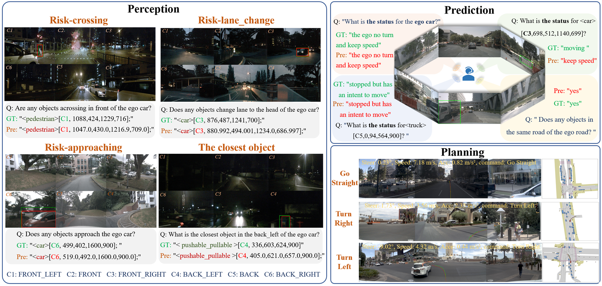
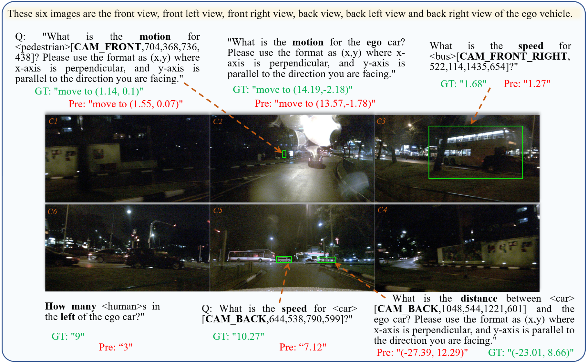
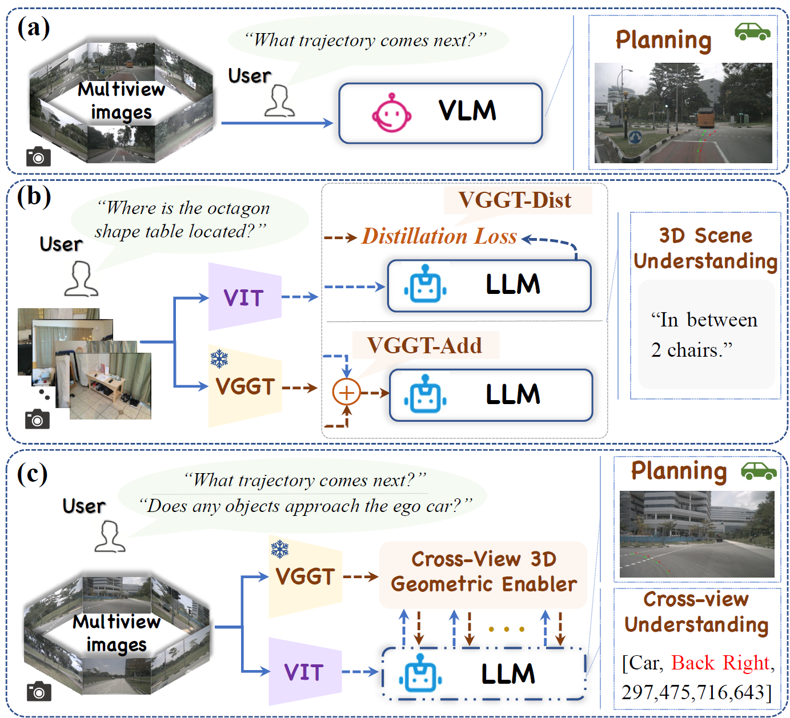
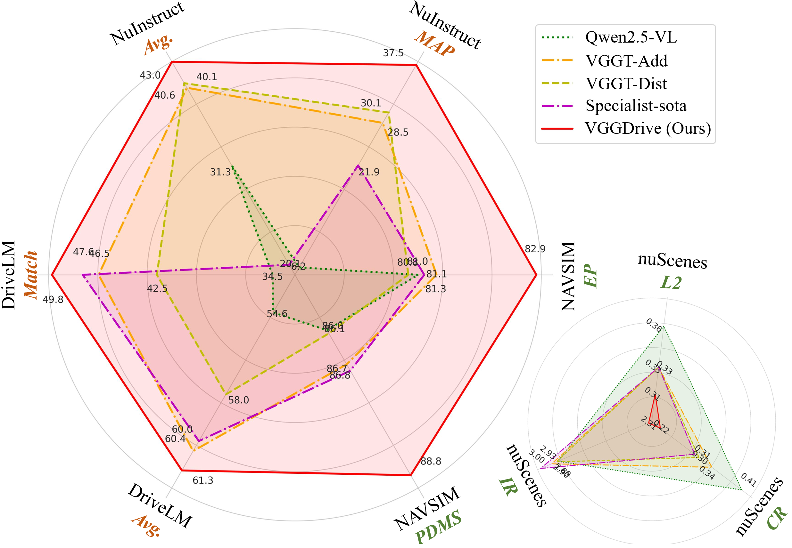

🧩 Conventional VLMs in autonomous driving “understand language but lack geometric insight.” Even when augmented with constructed Q&A data for auxiliary training, such approaches provide only superficial improvements and fail to address the core limitation in cross-view 3D spatial understanding.
💡 VGGDrive moves beyond data-level fixes and charts a new course by upgrading the capability structure itself. It introduces a mature 3D foundation model as a geometric backbone for VLMs, establishing a new technical paradigm that empowers Vision-Language Agents (VLAs) with 3D modeling capability and provides a scalable, sustainable pathway for enhancing autonomous driving systems.
🛠️ The core innovation lies in the design of a plug-and-play Cross-View Geometric Enabler (CVGE). Through a hierarchical adaptive injection mechanism, VGGDrive achieves deep coupling between a frozen 3D foundation model and a VLM without altering the original VLM architecture. This mechanism efficiently injects 3D geometric features into the model, enabling genuine cross-view 3D geometric modeling capability for autonomous driving VLAs.

📈 Importantly, VGGDrive is not limited to single-task optimization. It consistently improves performance across five mainstream autonomous driving benchmarks, covering cross-view risk perception, scene understanding, motion and state prediction, and trajectory planning, thereby enhancing the full pipeline from perception to decision-making.

Compared to existing SOTA methods with SFT, VGGDrive shows clear advantages on the NNAVSIM v1 benchmark, indicating that enhancing the base VLM with cross-view geometric capabilities is a more effective approach than relying solely on auxiliary action decoders. VGGDrive also demonstrates strong performance on NuInstruct and DriveLM benchmarks, excelling in cross-view object perception, state prediction, and action planning tasks.
VGGDrive excels in both language-focused tasks like OmniDrive and open-loop trajectory planning on NuScenes, demonstrating the effectiveness of integrating 3D foundation models to enhance cross-view perception, trajectory prediction, and overall VLM-based autonomous driving performance..


@inproceedings{wang2026vggdrive,
title={Vggdrive: Empowering vision-language models with cross-view geometric grounding for autonomous driving},
author={Wang, Jie and Li, Guang and Huang, Zhijian and Dang, Chenxu and Ye, Hangjun and Han, Yahong and Chen, Long},
booktitle={Proceedings of the IEEE/CVF Conference on Computer Vision and Pattern Recognition},
pages={10954--10964},
year={2026}
}